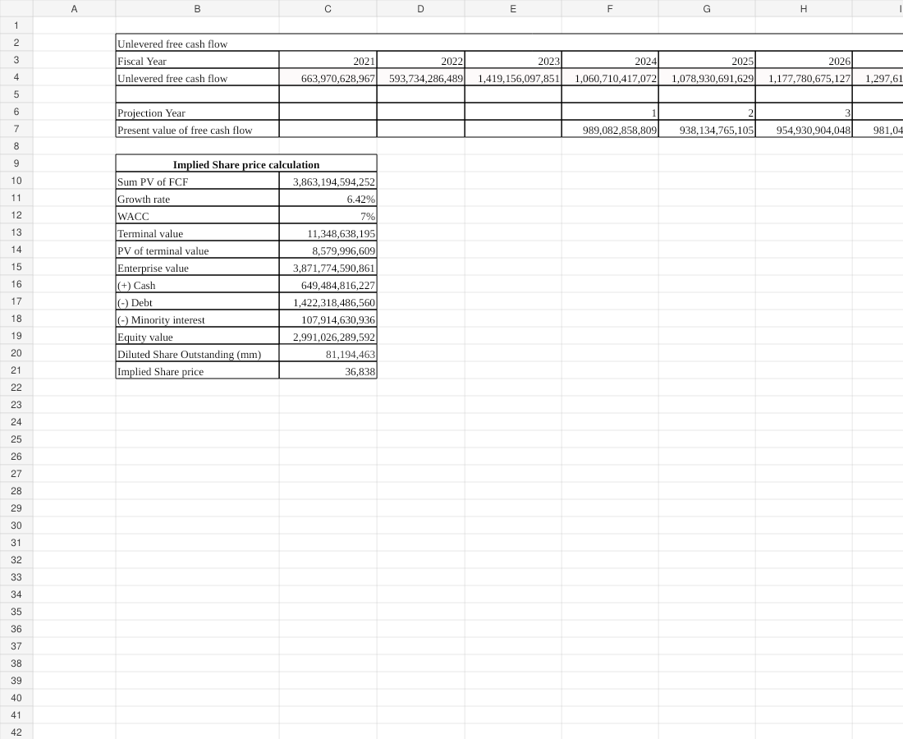
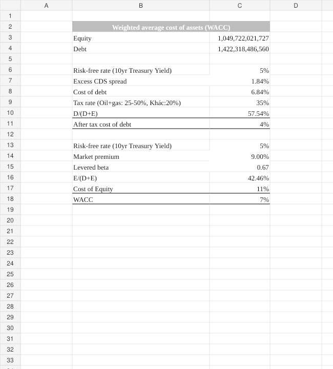

Equity Research · Valuation · Forecasting
A full discounted-cash-flow model translating forecast operating performance into enterprise value, equity value, and an implied share price.
The problem & context
The goal was to estimate intrinsic equity value from operating fundamentals rather than relying only on market multiples. The model required converting forecast free cash flow into present value, estimating terminal value, reconciling enterprise value to equity value, and calculating an implied per-share valuation.
My role
I structured the model across dedicated free-cash-flow, fixed-asset, net-working-capital, WACC, and DCF tabs. The final valuation linked the forecast to discounting assumptions and capital-structure adjustments.
Methodology
Build unlevered free cash flow from the operating forecast and supporting balance-sheet schedules.
Calculate WACC using the capital structure and cost-of-capital assumptions.
Discount forecast and terminal cash flows, then adjust for cash, debt, and minority interest to derive implied share price.
Model evidence


Key findings
Using a WACC of about 7.24% and terminal growth of 6.42%, the model produces an implied share price of approximately 36,838 VND in the workbook’s currency.
The workbook separates the cost-of-capital build from the DCF output so discount-rate assumptions can be reviewed independently.
AI-assisted workflow
AI support was used primarily for model review and communication: checking whether the valuation flow was logically complete, identifying areas that needed clearer explanation, and improving the presentation of assumptions and outputs.
Example prompts used for structured thinking:
Review this DCF structure: what key valuation bridge items should be checked before interpreting the implied share price?What assumptions in a DCF are most important to explain to a recruiter who only has two minutes to review the project?AI was used as a support and quality-control tool; calculations and final conclusions were checked against the underlying model.
Outcome / achievement
Built a complete valuation flow from forecast free cash flow through enterprise and equity value, creating a model that can be audited tab-by-tab rather than presenting only a final target price.
Supporting files
The page is designed so a recruiter can understand the project without downloading anything. The original Excel workbook is still available for deeper review.